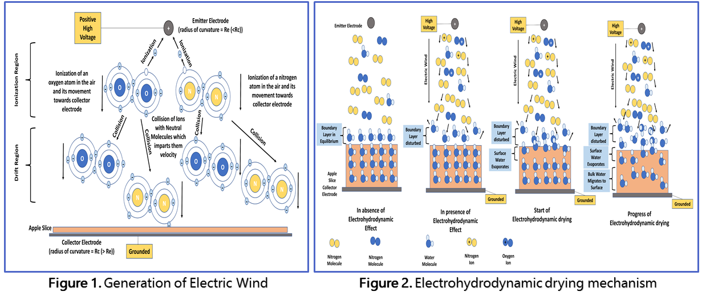

Drying is an important unit operation in the food industry for the extension of shelf-life of food products. Traditional drying techniques are based on application of heat to the food products and lead to undesirable loss of quality, nutrition, and sensory attributes.
Electrohydrodynamic (EHD) drying of foods is an innovative technique for drying of food products, which can be performed at ambient temperatures and at rates higher than conventional drying techniques. Furthermore, the energy consumption in EHD drying is lesser than traditional methods. The EHD drying is based on the removal of moisture from food products due to the action of electric wind. My thesis is based on the study of the process of EHD drying of food products and development of an EHD drying device.